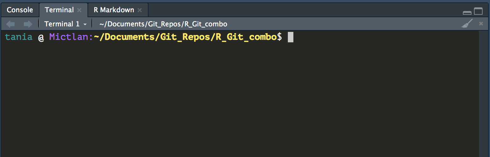

Chapter 2 Introduction to Git
You ideally will already have been trough a basic introduction to Git. The RSE introduction to Git materials can be found at: https://ooominds.github.io/RSE_induction/
As a basic, the first thing you need to do is to configure Git so that it knows who you are. From your shell / terminal type:
git config --global user.name 'Tania Allard'
git config --global user.email 't.allard@sheffield.ac.uk'
git config --global --listsubstituting your name and the email associated with your GitHub account.
2.1 More about git config
From RStudio, go to Tools > Shell and tell Git your name and GitHub email by typing (use your own name and email).
Note: If you are on Windows, check the title bar of the shell that was opened! If you see cmd.exe at the end of the status bar, this is the Windows Command Prompt. If you instead see MINGW64 at the beginning, you have successfully opened Git Bash!
Note: If you are not in an R Project that is version controlled with git, Tools > Shell will open Windows Command Prompt. If this is the case and RStudio still opens cmd.exe, check Tools > Global Options > Git/SVN and tick the box for “Use Git Bash as shell for Git projects”. You may need to restart RStudio.
git config --global user.name 'Tania Allard'- This does NOT have to be your GitHub username, although it can be. Another good option is your actual first name and last name. Your commits will be labelled with this name, so this should be informative to potential collaborators.
git config --global user.email 't.allard@sheffield.ac.uk'- This must be the email that you used to sign up for GitHub.
These commands return nothing. You can check that Git understood what you typed by looking at the output of git config --global --list.
2.2 The latet version of Rstudio
The instructions above tell you to find Tools > Shell to open up an instance of your own shell. If you have the latest version of RStudio installed you will find that a terminal is permanently running next to where your console is:

You should then be able to use this as you would normally use your shell in any Operative System you normally use.